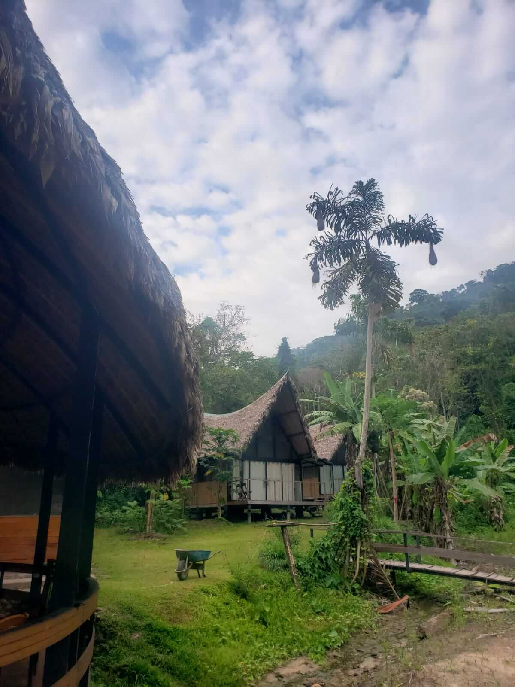
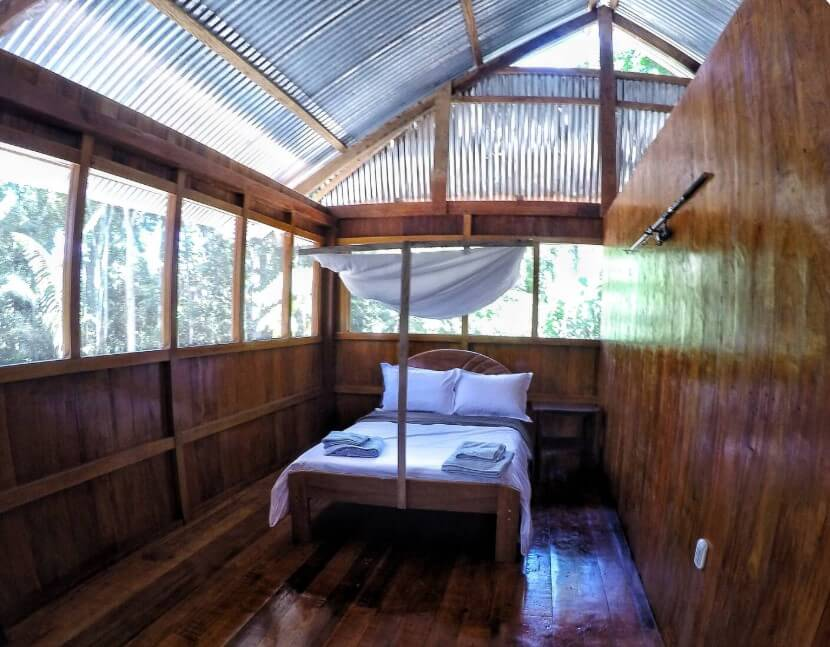
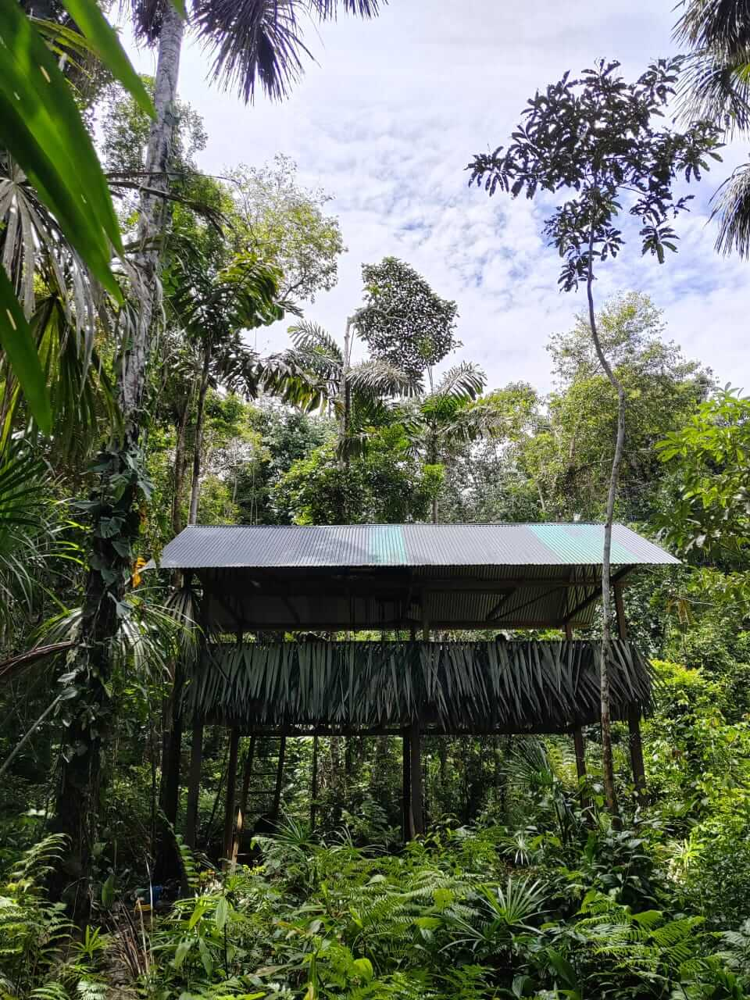
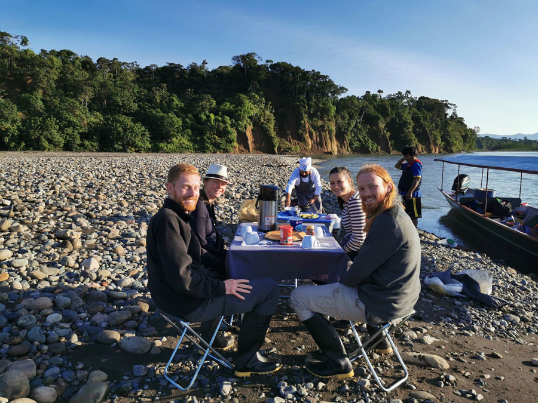

Todo sobre nosotros
Viajes a la Selva desde Cusco con una agencia de viajes local, Perú
Logística y Alojamiento

Operador turístico local y profesional
Cuidando nuestra selva tropical y nuestros visitantes
La selva tropical es un destino emocionante, hermoso y exótico. Nuestros líderes y equipo de viajes tienen años de experiencia transportando, guiando y alimentando a viajeros internacionales al Parque Nacional del Manu para más de una década.
Tenemos dos prioridades: cuidar de ti, el viajero, y cuidar de nuestro hogar, la selva. Trabajar con profesionales locales del área, limitar nuestra huella y apoyar Todos los esfuerzos de reforestación nos ayudan a realizar viajes ecológicos a la jungla.

Transporte Terrestre
Conductores profesionales y furgonetas segurasEl camino de Cusco a Manu es sinuoso y lleno de baches, y nuestros conductores conocen el camino como la espalda de sus manos. Todos los vehículos son inspeccionados y los conductores tienen toda la documentación en regla, y mucha experiencia conduciendo viajeros por estas carreteras.

Transporte fluvial
No puedes perder la oportunidad de viajar en bote a la selva. Desde el barco se obtiene aire fresco, hermosas vistas y la oportunidad de ver la vida silvestre del Amazonas en las orillas del río. Nuestros barcos están hechos de metal, unos 20 metros (65 pies) de largo y tienen espacio para que todos los viajeros, tripulación y equipo realicen el viaje.

Alojamiento: Bambú Lodge (Patria)
La primera noche de cada uno de nuestros viajes la pasamos en Bambu Lodge, en las afueras de Patria.
Aquí dormirás en un mosquitero, con baño privado con ducha a “temperatura ambiente” agua.
Se proporciona una toalla pequeña, pero querrás tener tu propio champú y jabón.
Este es un albergue compartido, donde pueden alojarse varios grupos y con un comedor compartido.

Alojamiento: Avatar Lodge (Machu Wasi)
Alojamiento AvatarLos elegantes bungalows del Avatar Lodge son un lugar perfecto como base para explorar la vida salvaje. cerca del lago Machu Wasi,
Cada bungalow tiene un baño privado con agua “temperatura ambiente”.
El comedor y las zonas comunes se comparten con otros grupos.
Accesible a 30 min en barco desde Puerto Atalaya.


Alojamiento: Lodge Nuevo Edén
La Casa Escondida: Nuestro Lodge FamiliarContamos con 3 propiedades en Nuevo Edén: 2 habitaciones/baños privados para parejas o una familia pequeña, y 2 Dormitorios con baño compartido para grupos más grandes. Esta es nuestra propiedad única ubicada cerca del pueblo donde creció Moisés, el fundador de Hidden Jungle.
Las duchas tienen agua a “temperatura ambiente”, ya que no se requiere agua caliente en la jungla.

Hospedaje: Casa Camuflaje, Nuevo Edén
Ubicada en terrenos de la familia Llaqui, esta plataforma es el lugar perfecto para disfrutar de una noche en el selva al aire libre. Se le proporcionará mosquiteros y colchón. Hay sacos de dormir disponibles. para alquilar y querrás traer algo para usar como almohada. Disfrutarás de los sonidos de la jungla. mientras observa la actividad animal nocturna.

Alimento
Disfrutará de comidas completas recién preparadas cada día del viaje. Nuestro equipo de chefs puede personalizar el menú de un viajero grupal o individual hasta cualquier requerimiento dietético desde vegano hasta celíaco, o cualquier alergia. Solo utilizamos agua embotellada limpia en cada paso del proceso de preparación de alimentos. Además, cada ¡La comida será absolutamente deliciosa!

Comunidad y conservación
El turismo está ayudando al pueblo y a la Vida silvestreEstamos seguros de que el turismo es la industria más saludable y positiva de la selva tropical. el llaqui La familia posee un terreno que utilizamos para senderos, albergues y la casa de camuflaje. es el unico pedazo de tierra en el área que se utiliza para la conservación, y podemos sentir los beneficios de nuestra protección de esta tierra por la flora y la fauna. Cada viajero que visita Nuevo Edén nos está ayudando con esto pequeño proyecto de conservación y, a medida que crecemos, nos dedicamos a ayudar a la comunidad y la naturaleza en más maneras también.

Parque Nacional del Manu, Perú
Zona Cultural, Zona Reservada y BlanquilloEl Parque Nacional del Manu es un lugar enorme que se extiende por 4 regiones distintas: las altas montañas, (Ajanaco) el Bosque Nuboso, la Selva Alta (Patria & Machu Wasi) y la Selva Baja (Nuevo Edén, la Zona Reservada y Blanquillo)
Según su presupuesto, duración del viaje e intereses, estamos ansiosos por compartir la biodiversidad, los recursos naturales maravillas, sabores y cultura local del Parque Nacional del Manu contigo.
¡Vamos a la selva!
Introducción a nuestra historia
Nuestra historia

Moisés Llaqui Llanca
Selva Experto y guía turísticoSoy guía turístico en el Parque Nacional del Manu en Perú. Cuando era sólo un niño, Mis padres establecieron nuestro hogar en la selva, crecí con una conexión especial con el mundo natural. a mi alrededor. Mis padres me enseñaron sobre plantas medicinales, comida nativa y cómo podríamos sobrevivir y prosperar. en la selva. Con el tiempo, mi padre estableció una escuela y el pueblo empezó a crecer, familia tras familia. familia. Mi familia también creció: tengo cinco hermanas menores, todas ellas criadas en la selva. Cuando La escuela local se le quedó pequeña, mi padre organizó para que estudiara en una escuela en Shintyua que era para niños. de Comunidades Nativas de la zona. A medida que crecí, el principal regalo que me hizo mi padre fue enviarme a Cusco, para estudiar Turismo de Selva. Llevo muchos años trabajando como guía turística y me encanta compartir la selva con gente de todo el mundo. Si viajas conmigo, te compartiré los secretos. y complejidades de este impresionante lugar

Anna Ashley
administración & Coordinador de AventurasAnna atrapó el gusanillo de viajar desde una edad temprana, intrigada por diferentes culturas e idiomas. ella Visité Perú por primera vez mientras viajaba por trabajo, y decidí quedarme un tiempo para conocer realmente el cultura. Como viajera, ha visitado más de 30 países y siempre busca experiencias locales únicas. Ha creado Hidden Jungle Cusco para viajeros como ella, que quieren pasar una estancia genuina, divertida y relajada. experiencia en un país diferente.

Jordy Leonidas LLaqui
Gira GuíaNació en agosto de 1994 y creció en el Parque Nacional del Manu. Él y su familia utilizaron la abundante recursos que los rodean para vivir y prosperar en la jungla, abrazando la naturaleza que los rodea y aprendiendo cómo afrontar los desafíos también. Fue a la escuela primaria en la zona, luego se mudó a Cusco. donde estudió Turismo en el Instituto Americana de Turismo. Como especialista en la jungla, Jordy es muy conocedor de las muchas especies de aves del Perú, animales, plantas, insectos y toda la vida silvestre. Su Su objetivo es ayudar a conservar y preservar la selva y le apasiona compartir y enseñar a las personas. sobre la naturaleza y el mundo en el Parque Nacional Manu.

Cayetano LLaqui
ciudad Fundador y padreDecir que Cayetano ha tenido una vida extraordinaria sería quedarse corto. En una época de agitación política en Perú, y después de servir en el ejército, encontró el camino hacia la selva. cuando era joven. Aprendiendo todas las habilidades útiles a lo largo del camino, se convirtió en fabricante de barcos y comenzó una familia, viviendo una vida nómada ya que el trabajo lo requería.
Cuando llegó el momento de encontrar un hogar permanente para su familia, Cayetano Encontré un lugar perfecto que ahora es Nuevo Edén. Un arroyo prístino y una ubicación perfecta hicieron de este el lugar perfecto para establecerse. Poco a poco se les fueron uniendo otras familias y el pueblo empezó a crecer.
Avance rápido hasta el día de hoy. Gracias a la perseverancia de Cayetano, el pueblo ahora Cuenta con colegios, comercios, acceso vía carretera al Cusco, y más. Ahora pasa sus días regentando una pequeña tienda, criar peces y trabajar como mecánico. Le encantará compartir historias de su vida en la jungla. contigo.

Plácida Yanca
ciudad Fundadora y MadreGenerosa, hospitalaria y de gran corazón, Mamá Plácida es una fuerza de energía en Nuevo Edén. Crió a 6 niños en la jungla, trabajando duro para garantizar que todos siempre tenían lo que necesitaban. Ella es enérgica y siempre sonriendo y riendo, una amante de la vida. si eres Si estás interesada, un día te llevará a su campo de cultivo y querrás probar cualquiera de las deliciosas platos que ella cocina expertamente para su familia.
¿Por qué visitar el Parque Nacional del Manu?


¿Por qué viajar con nosotros?

Destinos

Nuevo Edén

Casa Matsigenka - Zona de Reserva

Camping Quebrada Negra